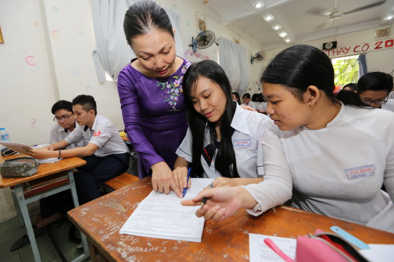

Cẩn trọng khi đăng ký dự thi để tránh rớt oan chế độ ưu tiên

Viết bởi Administrator Thứ năm, 14 Tháng 4 2016 07:45
TTO - Thí sinh hoàn toàn chịu trách nhiệm về thông tin khai trong phiếu đăng ký dự thi (ĐKDT). Nếu khai không chính xác thông tin trong phiếu ĐKDT, thí sinh sẽ gặp nhiều rắc rối sau này, kể cả tình huống đậu thành rớt.

Quy chế thi tuyển sinh ĐH, CĐ năm 2016 nêu rõ: “Thí sinh chịu trách nhiệm về tính xác thực của các thông tin trong hồ sơ đăng ký xét tuyển và hồ sơ ĐKDT. Các trường có quyền từ chối tiếp nhận hoặc buộc thôi học nếu thí sinh không đảm bảo các điều kiện trúng tuyển, khi đối chiếu thông tin trong hồ sơ đăng ký xét tuyển và hồ sơ ĐKDT với hồ sơ gốc”.
Thực tế cho thấy chưa mùa tuyển sinh nào có nhiều trường hợp thí sinh đậu thành rớt như năm 2015, và hầu hết các trường hợp này đều do xác lập sai đối tượng, khu vực (KV) ưu tiên trong tuyển sinh.
Tránh nhầm lẫn khi xác lập đối tượng ưu tiên
Trong kỳ tuyển sinh năm ngoái, rất nhiều sai sót, nhầm lẫn trong xác lập đối tượng ưu tiên của thí sinh được các trường ĐH phát hiện khi thí sinh đến nộp hồ sơ nhập học.
Tất cả trường hợp thí sinh đậu thành rớt ở Trường ĐH Kinh tế TP.HCM đều khai thuộc đối tượng ưu tiên 06, theo diện “con của người hoạt động kháng chiến giải phóng dân tộc, bảo vệ Tổ quốc và làm nghĩa vụ quốc tế” (được cộng 1 điểm - PV).
Khi nộp hồ sơ đăng ký dự thi THPT quốc gia, các thí sinh đã nộp giấy tờ để được hưởng ưu tiên và đều được bộ phận thu nhận hồ sơ của trường cùng hiệu trưởng trường THPT kiểm tra tính xác thực nhưng vẫn bị sai.
Trong các công văn Sở GD-ĐT tỉnh Phú Yên gửi Bộ GD-ĐT, báo cáo về vụ việc ba thí sinh tỉnh này rơi vào hoàn cảnh đậu thành rớt, cho rằng: “Các thí sinh trên đều có bố từng tham gia nghĩa vụ quốc tế tại chiến trường Campuchia (có giấy xác nhận của Bộ chỉ huy quân sự tỉnh). Khi làm phiếu ĐKDT, các em chưa rõ quy chế, giáo viên hướng dẫn chưa thấu đáo nên các em nhầm tưởng thuộc đối tượng ưu tiên 06”.
Hi hữu hơn, thí sinh Nguyễn Xuân Anh Tuấn (Quảng Ngãi) sau khi đã nhập học một tháng ngành y đa khoa Trường ĐH Y dược - ĐH Huế, lại nhận thông báo không đủ điểm đậu vào ngành học này. Tương tự các thí sinh nói trên, Tuấn đã ghi sai đối tượng ưu tiên (đối tượng 06).
Nhiều thí sinh, phụ huynh và cả cán bộ phụ trách tiếp nhận hồ sơ ĐKDT của các trường THPT còn nhầm lẫn trong trường hợp thuộc đối tượng 04 (thuộc nhóm ưu tiên 1, được cộng 2 điểm - PV).
Hoàng Thị Anh Thương - học sinh Trường THPT Ngô Gia Tự, tỉnh Vĩnh Phúc - đến Trường ĐH Dược Hà Nội làm thủ tục nhập học nhưng bị nhà trường từ chối tiếp nhận vì cho rằng thí sinh này không thuộc đối tượng ưu tiên 04, không đủ điểm trúng tuyển.
“Khi làm hồ sơ ĐKDT THPT quốc gia tại Trường THPT Ngô Gia Tự, tôi có đem biên bản giám định khả năng lao động - mất sức 81% của bố tôi do Hội đồng giám định y khoa tỉnh Vĩnh Phúc cấp đến hỏi nhà trường và được nhà trường nhập vào dữ liệu gửi Bộ GD-ĐT là tôi thuộc đối tượng ưu tiên 04” - thí sinh này cho biết.
Theo quy chế tuyển sinh ĐH, CĐ hệ chính quy, đối tượng 04 gồm: con liệt sĩ; con thương binh bị suy giảm khả năng lao động từ 81% trở lên; con bệnh binh bị suy giảm khả năng lao động từ 81% trở lên; con của người hoạt động kháng chiến bị nhiễm chất độc hóa học có tỉ lệ suy giảm khả năng lao động 81% trở lên; con của người được cấp “giấy chứng nhận người hưởng chính sách như thương binh, mà người được cấp giấy chứng nhận người hưởng chính sách như thương binh bị suy giảm khả năng lao động 81% trở lên”; con của Anh hùng lực lượng vũ trang, con của Anh hùng lao động; người bị dị dạng, dị tật do hậu quả của chất độc hóa học, đang hưởng trợ cấp hằng tháng, là con đẻ của người hoạt động kháng chiến; con của người có công với cách mạng quy định tại điểm a, b, d khoản 1 điều 2 pháp lệnh ưu đãi người có công với cách mạng số 26/2005/PL-UBTVQH11 ngày 29-6-2005 được sửa đổi, bổ sung theo pháp lệnh số 04/2012/UBTVQH13 ngày 16-7-2012.
Trong khi bố của thí sinh Hoàng Thị Anh Thương chỉ là công nhân mất sức lao động 81%, nên không thuộc các trường hợp theo quy định nêu trên.
Sửa đổi về khu vực ưu tiên
Theo quy chế sửa đổi, bổ sung, từ kỳ tuyển sinh 2016, đối tượng 01 trong nhóm ưu tiên 1 (được quy định ở điều 7 của quy chế) phải là “công dân Việt Nam là người dân tộc thiểu số, có hộ khẩu thường trú (trong thời gian học THPT) trên 18 tháng tại KV 1”.
So với quy định trước đây, đối tượng ưu tiên này được thu hẹp hơn và cụ thể hơn: không áp dụng đối với các xã thuộc KV 2, KV 3 và yêu cầu bắt buộc về thời gian có hộ khẩu thường trú.
Liên quan đến chính sách ưu tiên KV, năm nay Bộ GD-ĐT sửa đổi, bổ sung nội dung về nơi học và tốt nghiệp THPT như sau: “Thí sinh học liên tục và tốt nghiệp THPT tại KV nào thì hưởng ưu tiên theo KV đó. Nếu trong ba năm học THPT có chuyển trường thì thời gian học ở KV nào lâu hơn được hưởng ưu tiên theo KV đó. Nếu mỗi năm học một trường thuộc các KV có mức ưu tiên khác nhau, hoặc nửa thời gian học ở trường này, nửa thời gian học ở trường kia thì tốt nghiệp ở KV nào hưởng ưu tiên theo KV đó. Quy định này áp dụng cho tất cả thí sinh, kể cả thí sinh đã tốt nghiệp từ trước năm thi tuyển sinh”.
Đối với các trường hợp được hưởng điểm ưu tiên KV theo hộ khẩu thường trú, được quy định cụ thể như sau: “Học sinh có hộ khẩu thường trú (trong thời gian học THPT) trên 18 tháng tại các xã KV 3 và các xã có thôn đặc biệt khó khăn thuộc vùng dân tộc và miền núi theo quyết định của bộ trưởng, chủ nhiệm Ủy ban Dân tộc; các xã đặc biệt khó khăn vùng bãi ngang ven biển và hải đảo; các xã đặc biệt khó khăn, xã biên giới, xã an toàn khu vào diện đầu tư của chương trình 135 theo quyết định của Thủ tướng Chính phủ, nếu học THPT (hoặc trung cấp) tại địa điểm thuộc huyện, thị xã có ít nhất một trong các xã thuộc diện nói trên”. Đối với quy định về KV, để tính điểm ưu tiên, KV 2 bổ sung: “Các thị xã, thành phố trực thuộc tỉnh; các thị xã, huyện ngoại thành của thành phố trực thuộc trung ương (trừ các xã KV 1)”.
Ai là đối tượng ưu tiên 06?
Theo thông tư số 03/2015/TT-BGDĐT ngày 26-2-2015 của bộ trưởng Bộ GD-ĐT, đối tượng 06 gồm: công dân Việt Nam là người dân tộc thiểu số có hộ khẩu thường trú ở ngoài khu vực đã quy định thuộc đối tượng 01; con thương binh, con bệnh binh, con của người được hưởng chính sách như thương binh bị suy giảm khả năng lao động dưới 81%; con của người hoạt động kháng chiến bị nhiễm chất độc hóa học có tỉ lệ suy giảm khả năng lao động dưới 81%; con của người hoạt động cách mạng, hoạt động kháng chiến bị địch bắt tù đày; con của người hoạt động kháng chiến giải phóng dân tộc, bảo vệ Tổ quốc và làm nghĩa vụ quốc tế có giấy chứng nhận được hưởng chế độ ưu tiên theo quy định tại nghị định số 31/2013/NĐ-CP ngày 9-4-2013 của Chính phủ quy định chi tiết, hướng dẫn thi hành một số điều của pháp lệnh ưu đãi người có công với cách mạng; con của người có công giúp đỡ cách mạng.
Điều 49 của nghị định 31/2013 quy định: hồ sơ để được hưởng chế độ ưu đãi đối với người hoạt động kháng chiến giải phóng dân tộc, bảo vệ Tổ quốc và làm nghĩa vụ quốc tế gồm: giấy tờ chứng minh được khen tặng Huân chương Kháng chiến hoặc Huân chương Chiến thắng, Huy chương Kháng chiến hoặc Huy chương Chiến thắng; quyết định trợ cấp một lần của giám đốc sở LĐ-TB&XH. Thí sinh thuộc đối tượng 06 phải có hồ sơ với đầy đủ các giấy tờ trên.
TRẦN HUỲNH ( Địa chỉ email này đã được bảo vệ từ spam bots, bạn cần kích hoạt Javascript để xem nó. )
itnbk.edu.vn
- itnbk.edu.vn
- 09/03/2017 00:00 - Trường Chuyên Nguyễn Bỉnh Khiêm là chiếc nôi …
- 05/10/2016 10:44 - Thi trắc nghiệm môn Toán xác suất đỗ ăn may ngang …
- 28/09/2016 00:00 - Phương án tổ chức kỳ thi trung học phổ thông Quốc …
- 01/08/2016 12:45 - Hướng dẫn thí sinh đăng ký xét tuyển trực tuyến Đạ…
- 29/07/2016 15:27 - Bộ giáo dục và đào tạo công báo điểm sàn Đại học n…
- itnbk.edu.vn
- 16/03/2016 16:09 - Chỉ tiêu tuyển sinh vào 21 trường quân đội năm 201…
- 08/10/2015 00:00 - Gameshow truyền hình: Học trò xứ Quảng của QRT thắ…
- 22/07/2015 15:14 - Tra cứu điểm thi THPT Quốc gia năm 2015
- 02/04/2015 10:22 - Bộ Giáo dục công bố đề thi minh họa kỳ thi THPT qu…
- 27/02/2015 00:00 - 10 điểm nổi bật của quy chế kỳ thi THPT quốc gia